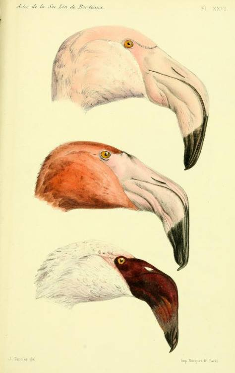

Το χαμόγελο του φλαμίνγκο
Evolution notes

Illustration of the unusual morphology of the flamingo bill.
Τα φλαμίνγκο είναι κάτι σαν τον Jake Tucker από το Family Guy: κάποιες από τις δομές που βρίσκονται στο κεφάλι τους μοιάζουν να είναι ανεστραμμένες.
Ο λόγος βρίσκεται στον ιδιαίτερο τρόπο με τον οποίο τρέφονται. Όταν αναζητούν τροφή μέσα στο νερό, κρατούν το κεφάλι τους αναποδογυρισμένο. Το ράμφος τους έχει εξελιχθεί ώστε να λειτουργεί αποτελεσματικά ακριβώς σε αυτή τη θέση.
Στα περισσότερα σπονδυλόζωα με γνάθους —όπως τα πτηνά και τα θηλαστικά— η άνω γνάθος συνδέεται στενά με το κρανίο και η κάτω γνάθος είναι αυτή που πραγματοποιεί το μεγαλύτερο μέρος της κίνησης κατά τη μάσηση.
Στα φλαμίνγκο, όμως, η μορφολογία και η μηχανική του ράμφους είναι ιδιαίτερα τροποποιημένες για τον τρόπο φιλτραρίσματος της τροφής τους. Ακόμη και το σχήμα των δύο τμημάτων του ράμφους διαφέρει από εκείνο των περισσότερων πτηνών: η κάτω γνάθος είναι μεγάλη και βαθιά, ενώ η άνω είναι σχετικά μικρότερη και πιο ρηχή.
Για όποιον θέλει να διαβάσει περισσότερο, ο εξελικτικός βιολόγος Stephen Jay Gould έχει γράψει ένα εξαιρετικό δοκίμιο για την ιδιαίτερη μορφολογία των φλαμίνγκο με τίτλο The Flamingo’s Smile.
Bonus fun fact: γιατί είναι ροζ;
Το ροζ χρώμα των φλαμίνγκο προέρχεται σε μεγάλο βαθμό από τις χρωστικές που περιέχονται στους οργανισμούς που καταναλώνουν, όπως φύκη και μικρά καρκινοειδή.
Η τροφή τους είναι πλούσια σε καροτενοειδή. Μετά την πέψη, αυτές οι χρωστικές απορροφώνται, μεταφέρονται στους ιστούς και τελικά συσσωρεύονται στο φτέρωμα, συμβάλλοντας στις χαρακτηριστικές πορτοκαλί και ροζ αποχρώσεις.
Κάτι παρόμοιο παρατηρούμε και στα καρκινοειδή, όπως οι γαρίδες, όταν αλλάζει το χρώμα τους κατά το μαγείρεμα.